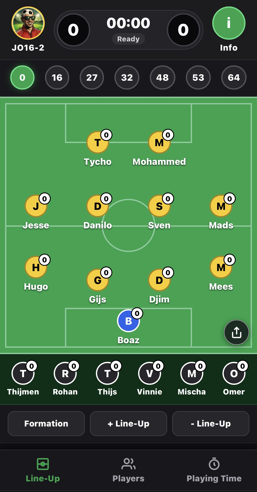
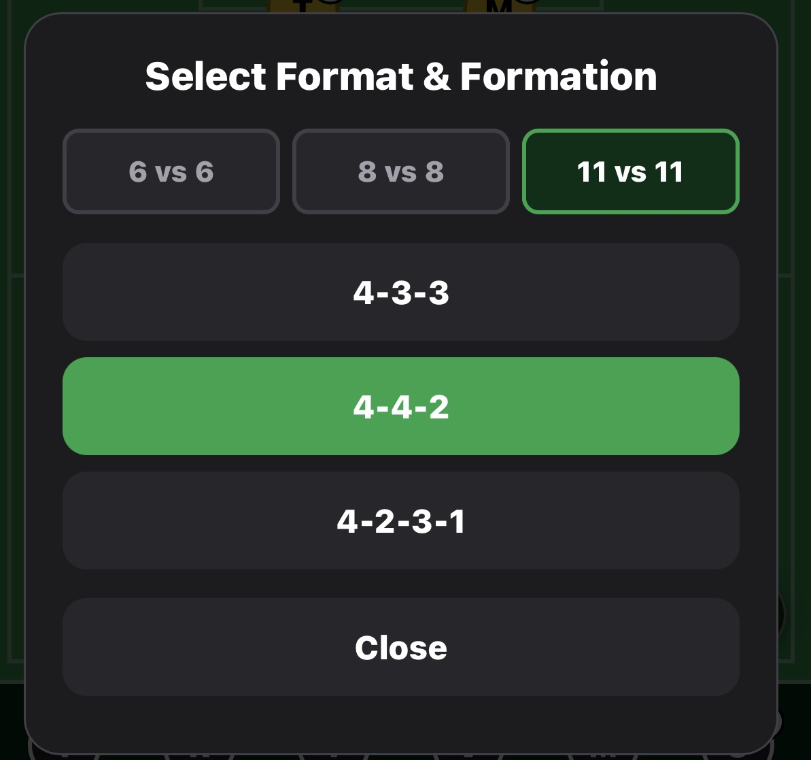
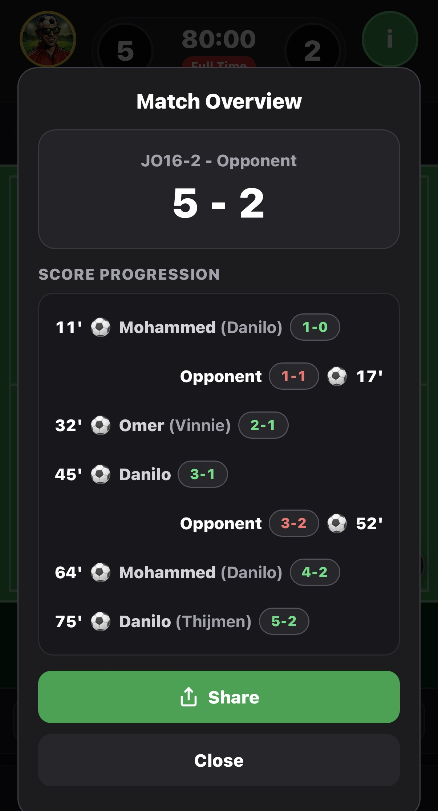
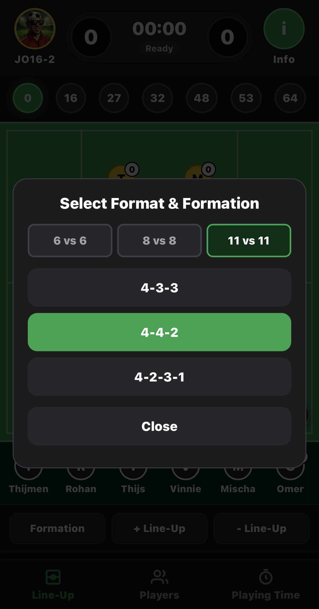
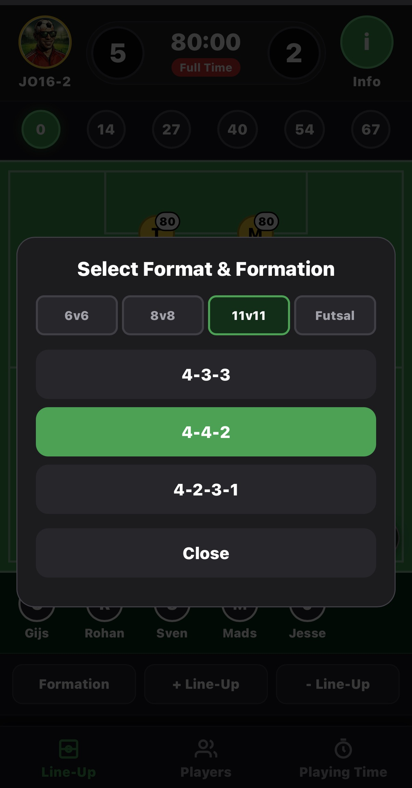
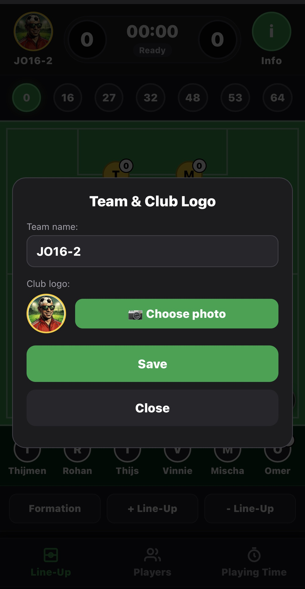

Da Pitch
Da Pitch: Football Sub & Score tracker. A completely free app without ads, designed for football coaches.






Key Features
- All features are free, without any ads!
- Live scorekeeping, goals, assists, subs, minutes played.
- Multiple formats and formations (6v6, 8v8, 11v11).
- Easy, fast subs coupled with flexible line-ups for multiple subs at the same time.
- Easy player and bench management.
- Easy sharing of the formations, match overview and minutes played.
- 30x simulation speed for testing subs, line-ups, playing time.
- No installation or account needed, all data stored locally.
How to Install
-
1)
Click the Launch App button below to open the app directly in your browser.
-
2)
Save as a web app on your home screen for instant fullscreen access: • iPhone (Safari): Tap the menu icon (three lines/dots) at the bottom, tap Share, select View More, and tap Add to Home Screen. • Android (Chrome): Tap the menu (three dots) in the top right and select Add to Home screen or Install app.
Frequently Asked Questions
How do I install the app on my phone?
You don't need an app store. Simply open the app in your phone's browser (Safari on iOS or Chrome on Android) and select "Add to Home Screen" from your browser menu. The app will install instantly with its own icon on your home screen.
What is a PWA (Progressive Web App)?
A Progressive Web App is a modern web application that gives you the best of both worlds: the accessibility of a website and the smooth, fullscreen experience of a native app.
Is the app really open source and free?
Yes, absolutely! The entire codebase is open source and hosted on GitHub. There are no paid tiers, hidden subscriptions, or ads—it is built purely as a free tool to help coaches manage their teams with ease.
How is my data and privacy handled?
Your data stays entirely with you. There is zero external tracking or data collection; everything—including your team configurations, line-ups, and player rosters—is stored locally on your own device.
Does the app work offline?
Yes, perfectly! Because the app and all its data run entirely locally on your device, you don't need an internet connection. You can manage your team and review line-ups even when you are standing on a remote football pitch with zero reception.
How do updates work in a PWA?
You never have to manually update the app through an app store. Whenever you open the app with an active internet connection, it automatically fetches the latest improvements from GitHub in the background, while your local team data remains safely intact.
How do you work with multiple line-ups and substitutions?
You can easily prepare multiple tactical line-ups ahead of time. This allows you to preview a planned setup with a single click and seamlessly execute multiple substitutions at once when it's time to rotate your squad during the match.